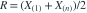
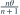

样本来自  ，
， 已知。中程统计量
已知。中程统计量
， 已知。中程统计量 
的期望为？- A

- B

- C
- D
我已思考，展开答案与解析
正确答案：B
- 写 ，其中 。
- 、，代入即得 。
易错提醒最大值、最小值各自有偏，但两端的偏差在中程中抵消。
JYSG · 432精选 · 册内北京师范大学432·2025年·3(2)；PDF第63页（印刷页61）
原大题拆解
， 已知。中程统计量 
的期望为？
JYSG · 432精选 · 册内北京师范大学432·2025年·3(2)；PDF第63页（印刷页61）
原大题拆解